|
|
HELP FIND THE FOLLOWING LOCATIONS
PAGE 14
THE SAINT: The Covetous Headsman (Michael Truman: 1962)
Pan American Terminal (Worldport), Terminal 3, John F. Kennedy International Airport, Brooklyn, New York, USA– Simon Templar is waiting for his plane, flight 114 from New York to Paris to take off from ‘Idlewild’ Airport when he introduces himself to Valerie North.
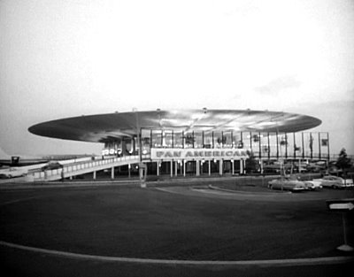
Arch de Triumph, Place Charles de Gaulle, Paris - Inspector Quercy and Sergeant Leduc set off to Rue Azoute to investigating the death of Charles Brione.
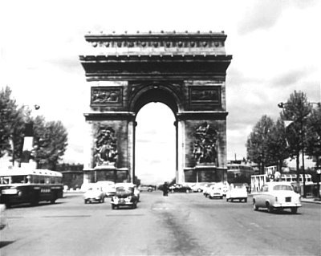
 Looking from
Avenue de la Grande Armée.
Looking from
Avenue de la Grande Armée.
Hôtel Rousseau, 66 Rue
Catherine de La Rochefoucauld, 9th arrondissement of Paris -
Investigating the death
of Charles Brione, Inspector Quercy and Sergeant Leduc visit 32 Rue
Azoute,
Paris 14, France.
Pierre Alfonsi, May 2022
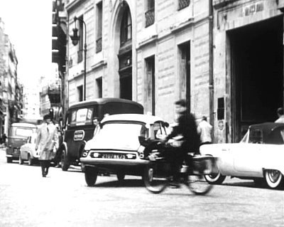
The Eifel Tower, Paris –From his window seat in the plane Simon Templar is able to see Paris. He lets Valerie North know that they have arrived.
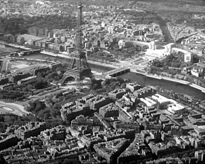
Heathrow Airport, London – The Pan American plane carrying Simon Templar and Valerie North touches down at Orley Airport.
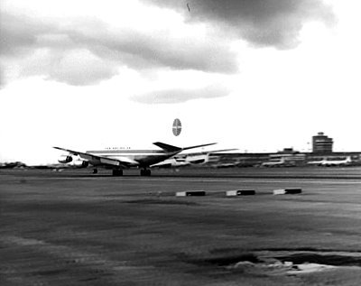
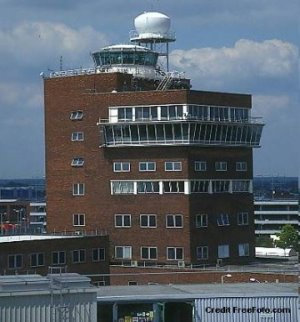
 When trying
to identify airports always look for the control tower.
When trying
to identify airports always look for the control tower.
Orly Airport, France– Kaplan and Mario are waiting for Valerie North when she arrives at Orly Airport.
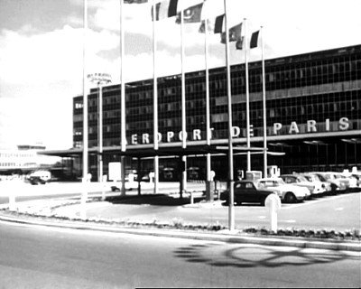
Arch de Triumph from Avenue de Léna, Paris - Simon escorts the grieving Valerie North as Inspector Quercy drives them to their hotel.
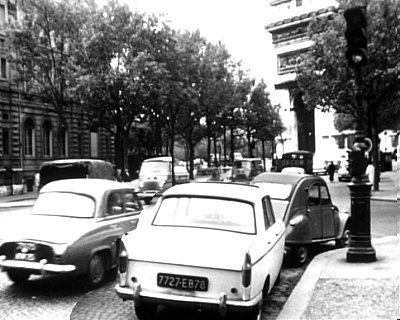
Hotel
Raphael, 17 Avenue Kleber Paris/Avenue
Des Portugais - Simon escorts the grieving
Valerie North as
Inspector Quercy drives them to their hotel.
(Identified by Pierre Alfonsi, February 2014)

50 Rue La
Perouse Paris – Simon
escorts the grieving Valerie North as Inspector Quercy drives them to
their
hotel.
(Identified by Pierre Alfonsi, February 2014)

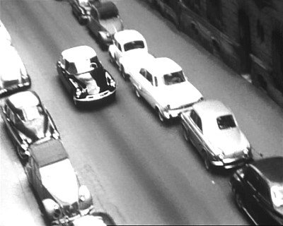
Hotel La
Perouse on the left at the crossing
Avenue Des Portugais And Rue La Perouse Paris–
Simon escorts the
grieving Valerie North as Inspector Quercy drives them to their hotel.
(Identified by Pierre Alfonsi, February 2014)
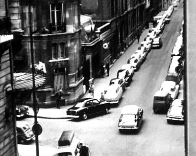
30 rue La
Pérouse 75116 Paris, France –
Simon escorts the grieving Valerie North as Inspector Quercy
drives them to
their hotel. They turn into Rue de Coleze, but they have been followed
from the
airport by Kaplan and Mario.
(Identified by Pierre Alfonsi, December 2014)
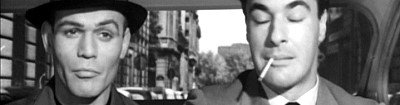
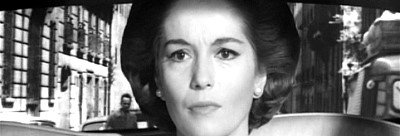
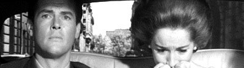
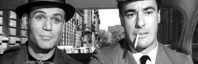
20 Avenue de Pierre 1er de Serbie, Paris – Valerie North and Simon Templar check into their hotel helped by Inspector Quercy (no longer a hotel).
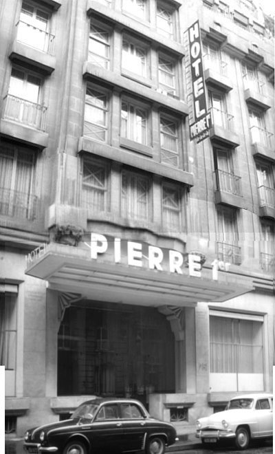
13 Avenue
Eylau, Paris – Simon Templar
decides that the best way to cheer Valerie North up after the death of
her
brother is to show her the sites of Paris.
(Identified by Pierre Alfonsi, February 2014)
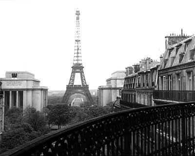
Junction of
Willoughby Road and Willow Road,
NW3 – Kaplan and Mario wait in their car for
Valerie North. As
Sergeant Leduc’s police car draws near Mario drives the car to block
the way.
Leduc is coshed and Valerie North is kidnapped.
(Identified by Remy Hunter, 18th January 2009)
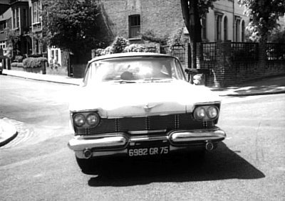
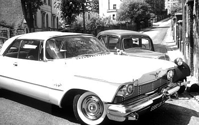
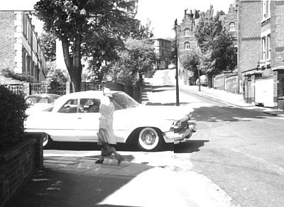
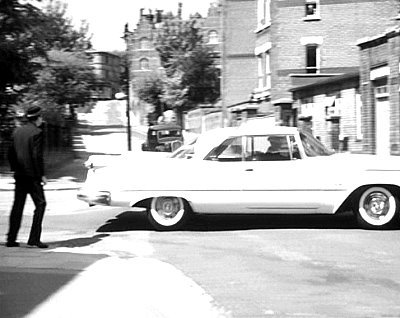
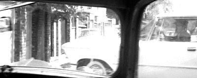
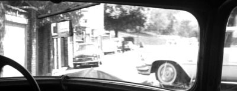
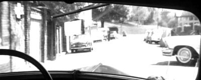
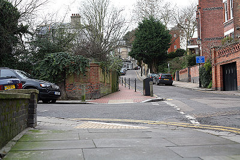
photo: Remy Hunter
Heathside,
NW3 - Kaplan goes to
report to Georges Olivant at Rue de Nord, St. Cloud (South
Lodge). after
the unsuccessful attempt to retrieve the second medallion. Later Simon
Templar (Roger
Moore) arrives at the house of Georges Olivant looking for
Valerie North.
(Identified by Geoff Dodd, February 2012)
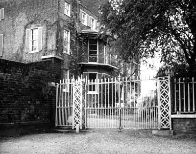
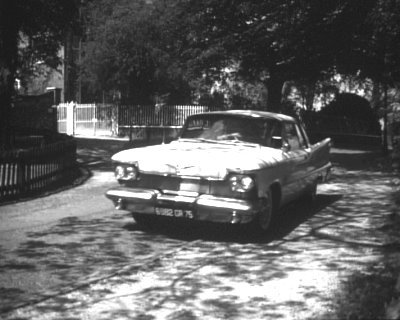
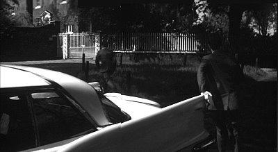
Arch de Triumph from Avenue Marceau, Paris– Simon goes to consult his ex-resistance colleague Antoine Louvois about Georges Olivant.
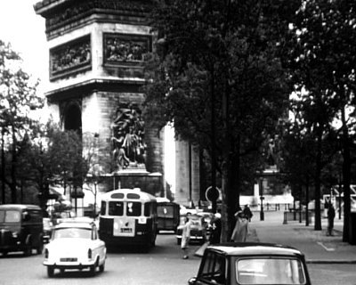
23, rue des Abbesses, Paris – Simon Templar (Roger Moore) goes to consult his ex-resistance colleague Antoine Louvois about Georges Olivant.
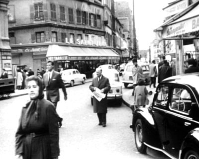
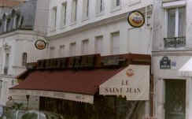
 The cafe “Le Saint Jean” is
still there.
The cafe “Le Saint Jean” is
still there.
Rue de Mont Cenis, Montmartre, Paris – Simon Templar (Roger Moore) goes to consult his ex-resistance colleague Antoine Louvois about Georges Olivant (the junction with Rue De Chevalier De la Barre).
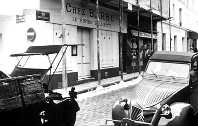
Unknown 9 – – Simon Templar (Roger Moore) goes to consult his ex-resistance colleague Antoine Louvois about Georges Olivant.
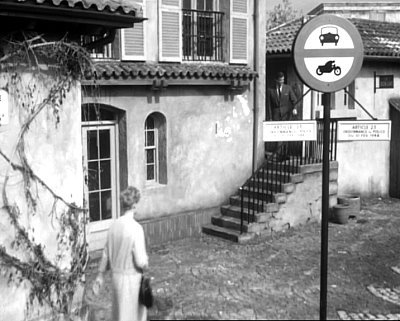
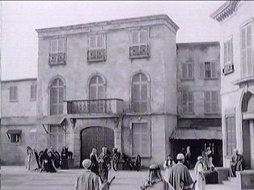
 Probably the
Elstree backlot. The roof of the building in the background top right
looks
like the building on the right.
Probably the
Elstree backlot. The roof of the building in the background top right
looks
like the building on the right.
Beades
Mews/New End/Streatley Place junction
in Hampstead, NW3 – Simon Templar (Roger Moore)
goes to consult his
ex-resistance colleague Antoine Louvois about Georges Olivant.
(Idenified by Sam Denham, April 2013)
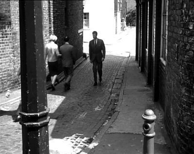
Avenues de New York, Paris – After visiting Antoine Louvois, Simon Templar sets off to Rue Azoute.
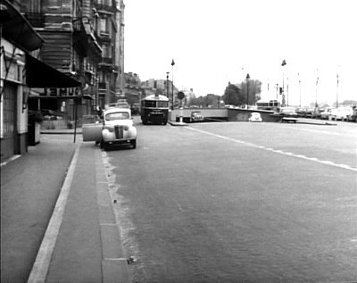
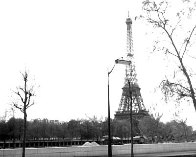
La préfecture de police, l'île de la Cité, Paris – Simon Templar goes to the prefecture to quiz Inspector Quercy.
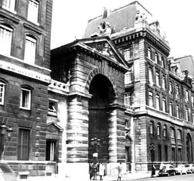
Place de Concorde, France – Simon Templar goes to Le Bal Noir to interview Josie Caval.
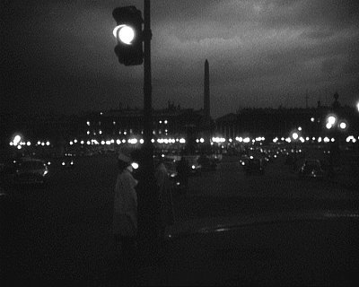
Place Pigalle, Paris – Simon Templar goes to Le Bal Noir to interview Josie Caval.
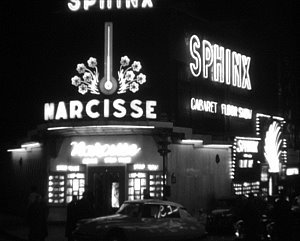
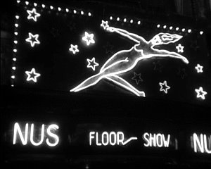
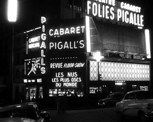
 Place
Pigalle Narcisse
Cabaret – demolished 2004
Place
Pigalle Narcisse
Cabaret – demolished 2004
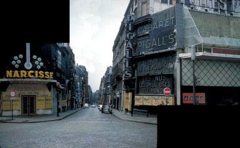
Cinema Le Moulin de Chanson, 43 Bd de Clichy, 75009 Paris, France (closed) – Simon Templar goes to
Le Bal Noir to interview Josie Caval.
{Identified by Pierre Alfonsi, June 2025)

The Moulin Rouge, 82 Boulevard de Clichy, Paris – Simon Templar goes to Le Bal Noir to interview Josie Caval.
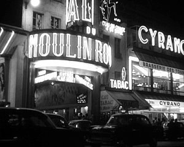
Unknown 12 – Later Simon Templar drives to to the house of Georges Olivant at Rue de Nord.
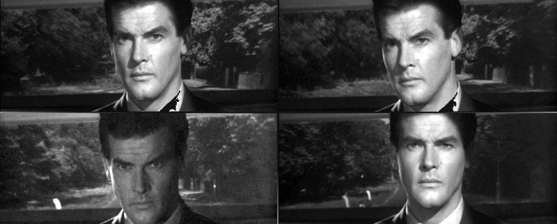
Think you know a spot? Need a bigger image? Email me.
< Previous | Index | Avengerland | Next >
Copyright © 2022 Anthony R. McKay